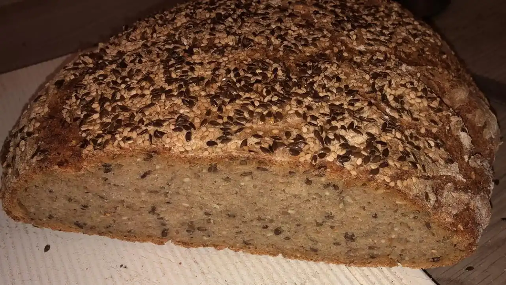

Sourdough bread with seeds and grains

- ⏲️ Prep time: 15 min
- 🳠Cook time: 120 min
Ingredients
For the preparation
- 100g grain of choice (e.g. rye, spelt and wheat)
- 40g linseed
- 30g sesame
- 30g sunflower seeds
- 600g water
For the bread
- 400g sourdough
- 200g water (25-35°C)
- 200g rye flour
- 300g wheat flour
- 20g sea salt
- 2tsp bread spice
- soaked seeds and grains
Directions
Preparations (the day before)
- Feed your sourdough starter for the next day.
- Boil the grain in 500g water for 45 minutes.
- Put the seeds and 100g water into a bowl.
- Store everything in a locked bowl overnight (13-16h).
Bread
- Remove leftover water from the seeds and grains
- Stir all ingredients for the bread and knead them well.
- Let the dough rest for 5 hours in warm (25-30°C) conditions.
- Preheat the oven to 250°C.
- Bake for up to 20 minute with steam.
- Release the steam and turn the heat down to 150°C.
- Bake for another 50-60 minutes
Contribution
- SirStark